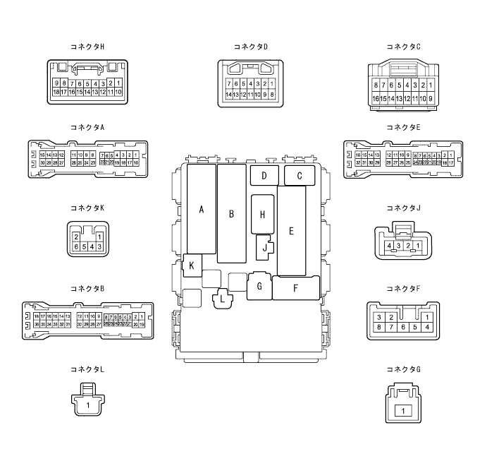
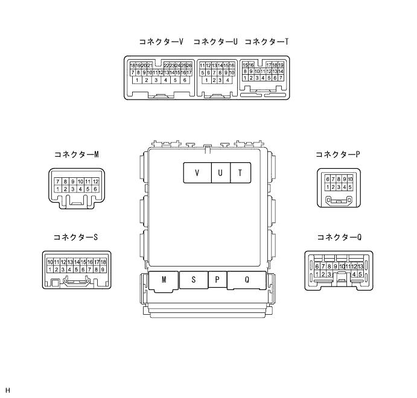
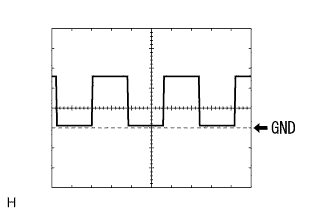
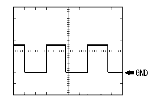

Smart Entry & Start System (Start System) Terminals of ECU |


Disconnect the instrument panel J/B assembly (main body ECU) connector.
Using SST (Toyota electrical tester), inspect the voltage and resistance between each terminal of the vehicle side wire harness connector and body ground.
| Tester Connection | Item | Condition | Standard |
|---|---|---|---|
| U1 (AM1) - Body ground | Voltage | Always | 11 to 14V |
| V6 (AM2) - Body ground | Voltage | Always | 11 to 14V |
| U10 (SSW1) - Body ground | Resistance | Engine switch pushed → released | Below 1 Ω → 10k Ω or higher |
| U9 (SSW2) - Body ground | Resistance | Engine switch pushed → released | Below 1 Ω → 10k Ω or higher |
| V14 (STP) - Body ground | Voltage | Brake pedal depressed → released | { (AM1 or AM2) - 2V} or more → 1V or less |
| U4 (GND2) - Body ground | Resistance | Always | Below 1 Ω |
| C12 (LIN) - Body ground | Resistance | Always | 10k Ω or higher |
| T15 (CANH) - Body ground | Resistance | Always | 10k Ω or higher |
| T16 (CANL) - Body ground | Resistance | Always | 10k Ω or higher |
| U11 (CANP) - Body ground | Resistance | Always | 10k Ω or higher |
| U12 (CANN) - Body ground | Resistance | Always | 10k Ω or higher |
Connect the connector.
Using SST (Toyota electrical tester) or SST (TaSCAN), inspect the resistance, voltage and waveform between each terminal of the connector.
| Tester Connection | Item | Condition | Standard |
|---|---|---|---|
| V4(ACCD) - U4(GND2) | Voltage | IG OFF→ACC ON | 1V or less → { (AM1 or AM2) - 2V} or more |
| U6(IG1D) - U4(GND2) | Voltage | ACC ON→IG ON | 1V or less → { (AM1 or AM2) - 2V} or more |
| U5(IG2D) - U4(GND2) | Voltage | ACC ON→IG ON | 1V or less → { (AM1 or AM2) - 2V} or more |
| V7(SLR+) - U4(GND2) | Voltage | Steering lock actuator operating → not operating | 1V or less → { (AM1 or AM2) - 2V} or more |
| V18(SLP) - U4(GND2) | Voltage | Steering lock → steering unlock | { (AM1 or AM2) - 2V} or more → 1V or less |
| D8 (SPD) - Body ground | Waveform | Driving at approx. 5km/h | Pulse generation (waveform 1) |
| T2 (TACH) - Body ground | Waveform | Engine idling | Pulse generation (waveform 2) |
| V15(P) - U4(GND2) | Voltage | Shift lever P position → other than P position | { (AM1 or AM2) - 2V} or more → 1V or less |
| T11(ACCR) - U4(GND2) | Voltage | Shift lever in P, brake pedal depressed, engine switch pushed (cranking) → other than cranking | 1V or less → { (AM1 or AM2) - 2V} or more |
| T4(STSW) - U4(GND2) | Voltage | Brake pedal depressed, engine switch held pushed → engine switch released after approx. 1 seconds | { (AM1 or AM2) - 2V} or more → 1V or less |
| T3(STR) - U4(GND2) | Voltage | Shift lever in P, N → other than P, N | 1V or less → { (AM1 or AM2) - 2V} or more |
| T14(STR2) - U4(GND2) | Voltage | Engine control computer connector B disconnected, shift lever in P or N, brake pedal depressed, engine switch pushed (cranking) → other than cranking | { (AM1 or AM2) - 2V} or more → 1V or less |
| T1(INDS) - U4(GND2) | Voltage | Shift lever in P or N, brake pedal depressed | { (AM1 or AM2) - 2V} or more |
| T8(INDW) - U4(GND2) | Voltage | ACC ON or IG ON, brake pedal not depressed | { (AM1 or AM2) - 2V} or more |
| U8(SWIL) - U4(GND2) | Voltage | Headlight dimmer switch TAIL or HEAD | { (AM1 or AM2) - 2V} or more |
 |
Waveform 1
| Item | Description |
|---|---|
| Tool Setting | 5V / DIV、100ms / DIV |
 |
Waveform 2
| Item | Description |
|---|---|
| Tool Setting | 5V / DIV、10ms / DIV |